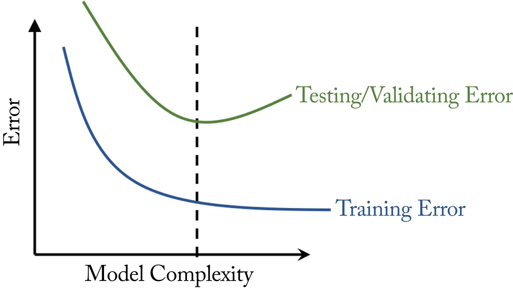

Chapter 4: Training a Model
Training a model to achieve high statistical performance within a computational and power budget requires several design considerations. These include defining a topology, preparing the dataset, properly initializing the model weights, selecting an optimization algorithm and objective function, reducing the model size, and evaluating the trained model. The training process can be computational and memory intensive, and there are techniques discussed in this and the next two chapters to reduce the training time and mitigate memory bottlenecks.
In Section 1.6, we introduced the training steps. The training stops when the validation error is either less than some threshold or does not continue to decrease after several iterations. The validation error is computed every \(n\) training iterations, where \(n\) is chosen by the data scientist. It is used as a metric of how the model will perform when it is deployed.
During the backpropagation step, the computed gradients provide a measurement of the contribution of each weight to the cost. The terms cost, loss, penalty, error, and objective function, are sometimes used interchangeably. In this book, loss represents a metric of difference between the expected output and actual output for one data sample, and cost, error, and objective function synonymously represent the sum of the losses for a batch of samples. Examples of common objective functions are the cross-entropy error (discussed in Section 4.4) and the mean square error (MSE) for classification and regression tasks, respectively.
In the remainder of this chapter, we detail how to train a model to achieve low training and low test error. We review techniques to improve the performance on each of the training steps outlined in Section 1.6. We provide the methodologies that experienced data scientists use in industry to deal with unbalanced datasets, design new topologies, resolve training bugs, and leverage existing pre-trained models. We also discuss methods to reduce memory bottlenecks. Distributed training algorithms to reduce the training time are discussed in Chapter 6. A review of the notation introduced in Section 1.10 can help understand the equations presented in this chapter.
4.1 Generalizing from Training to Production Datasets
A well-designed and trained model has good performance on production data not used during training. That is, the model generalizes from the training dataset to the production or test dataset. Specifically, the model has low error rates in both the training and test datasets. On the contrary, a model with high test error rates is unreliable. In this section, we describe the source of high test error rates, specifically, underfitting, overfitting, and sharp minima, and how to reduce this error. The red dot represents the model's prediction.
Underfitting occurs when the model is too small because it has too little learning capacity and cannot properly learn the general characteristics of the data. The symptoms of underfitting are high training error and high test error. The best technique to mitigate underfitting is to use a more complex model. In DL, this means increasing the topology's representative capacity by adding more layers and more weights.
Overfitting occurs when a model has too much learning capacity and learns to fit the noise in the training data samples or other characteristics unique to the training set. Overfitting happens when using a prodigious model with insufficient training samples. The symptoms of overfitting are low training error and high test error. Figure 4.1 illustrates overfitting with a toy 1D example using linear regression, a simple ML algorithm. Figure 4.1a shows four training samples (the blue dots) and one validation sample (the green dot) not used during training. The \(x\)-axis is one feature, such as house size, and the \(y\)-axis is the label, such as house price. A polynomial function of third or higher-order can perfectly pass through the four training data points. The illustration uses a fourth-order polynomial for simple visualization. Figure 4.1b shows the model has no training error but has a higher validation error (the squared distance between the red and green dots). A simpler first-order (affine) function does not perfectly pass through all the training data points but has low validation error, as shown in Figure 4.1c. The red dot shows what each model predicts on the validation sample, and the green dot is the ground truth for that sample. The complex model overfits the training samples; it has zero training error but high validation error compared to the simpler model. Therefore, in this example, the simpler model is preferred.
Figure 4.1: (a) Four training samples (blue dots) and one validation sample (green dot). (b) A fourth-order polynomial function has zero training error but high validation error. (c) A simpler first-order polynomial function has low validation error. The red dot represents the model's prediction.
Figure 4.2 illustrates what happens to the training and validation error as the model grows in complexity. While the training error decreases with more complexity, the validation error first decreases and then increases. A model with complexity left of the dashed line is underfitting, and a model with complexity right of the dashed line is overfitting. The sweet spot is right at the dashed line, where the model has the lowest validation error. The model is complex enough to learn the characteristics of the data to avoid underfitting but simple enough to avoid overfitting.
 Figure 4.2: The ideal level of model complexity is where the validation error is the lowest.
The validation error is much more important than the training error because it represents the expected error when the model deploys in production. In ML theory, minimizing these errors is known as the bias-variance tradeoff. A high training error indicates high bias or underfitting. A high validation error and low training error indicates high variance or overfitting. It is always critical to determine the source of poor performance (overfitting or underfitting) before prescribing a solution.
An interesting and counterintuitive phenomenon unique to various DL topologies is the deep double descent, illustrated in Figure 4.3 [NKB+20]. As the topology complexity increases (that is, as the model grows in depth), the validation error first follows the expected trajectory of decreasing and then increasing, but then it begins to decrease again. That is, increasing the size of the topology can lower the test error in some scenarios. The exact reason is not well understood as complex models should result in overfitting. A tentative (hand-wavy) reason is that very large topologies can explore a larger solution space leading to superior solutions. Understanding this phenomenon and the impact on the recommended training techniques is ongoing research. Most practitioners safely ignore this phenomenon or are not aware of it.
Figure 4.3: An illustration of the deep double descent observed in some DL topologies; as the complexity increases, the validation error decreases and then increases as expected, but then it begins to decrease again. Based on [NKB+20].
Another source of poor generalization may be sharp minima [HS97]. This hypothesis is based on empirical evidence. Figure 4.4 illustrates the intuition with a toy 1D example using only one weight or feature (the \(x\)-axis). Training involves iteratively updating the model and moving to an area in the solution space with lower training error. The training cost function (solid blue line) is similar but slightly different than the testing cost function (dotted green line). This difference is because the test samples are similar but not identical to the training samples. In this example, the flat minimum solution and the sharp minimum solution have the same training error but different test errors. These errors are represented by \(J(w)\) along the \(y\)-axis. The flat minimum solution has a low test error, while the sharp minimum solution has a high test error (the green dot). A measurement of flatness is the trace of the Hessian; a small trace indicates a flat minimum [DYC+19].
Figure 4.4: In this toy example, the cost function with respect to the test dataset is slightly shifted from the cost function with respect to the training dataset. The sharp minimum solution has a high test error. The flat minimum has a small test error. Based on [KMN+17].
While a flat minimum generalizes better to unseen data, a sharp minimum does not necessarily indicate overfitting, and a flat minimum does not necessarily indicate low validation error [ML18]. Also, the functions resulting in a flat minimum can be altered to result in a sharp minimum without affecting the validation error, demonstrating the hypothesis above does not always hold [DPB+17].
There are various techniques to improve generalization, often by simplifying (regularizing) the model. The most common ones are as follows:
Larger datasets is the best technique to avoid overfitting. The toy example above only used four samples to train the fourth-order polynomial. Adding more samples while keeping the same model complexity (fourth-order polynomial) results in a more affine-like function that better generalizes to data not in the training set. OpenAI recommends for NLP models increasing the number of parameters by \(2.55\times\) whenever the dataset doubles to improve learning capacity and avoid over/underfitting [KMH+20].
Weight decay (also known as \(L_2\)-regularization) penalizes the magnitude of the weights and reduces overfitting. In the fourth-order polynomial example above, this would penalize the magnitude of the coefficients and result in a more affine-like function. The objective function incorporates the weight decay by adding a penalty term:
where \(\lambda \geq 0\) is the regularization factor and \(\mathbf{w}\) is the model weights (the polynomial coefficients in the regression example above). The bias weight does not have a multiplicative interaction with the activations; therefore, it is not regularized. Note that \(L_1\) (rather than \(L_2\), as shown above) regularization is less common.
Smaller batches improves generalization [ML18]. A training iteration involves processing a batch of data. Larger batches can have computational advantages (they have higher data reuse), but often large batches result in sharp minima. The ideal is a medium size batch where the model converges to a flat minimum and has high compute utilization. Finding an adequate batch size requires experimentation.
Better optimizer that finds a solution with a lower validation error. In Section 4.3, we discuss the gradient descent optimizer and others less prone to sharp minima solutions, such as LARS, LAMB, and RangerLARS.
Topology pruning means forcing some of the smaller weights to zero or removing parts of the model. In Section 6.3, we discuss pruning in more detail.
Label-smoothing regularization (LSR) modifies the ground-truth one-hot vector by adding a small \(\epsilon /M\) value to all the zero entries, where \(M\) is the number of classes and \(\epsilon\) is a small value, such as \(\epsilon=0.1\) [SVI+15]. The "1" entry in the one-hot vector is changed to \(1-\epsilon\) to maintain a valid probability distribution. Reducing the difference between the largest logit and all others reduces the confidence of a model and results in better adaptation to non-training samples.
Early stopping means the training stops when the validation error begins to increase. Similarly, the model is evaluated on the validation dataset and saved every \(n\) training iterations, and the model with the lowest validation error is selected. There are mixed opinions on using early stopping. Regularization via weight decay without using early stopping can lead to better results when the computational resources are available to experiment with multiple weight penalties. In practice, early stopping is a simple and effective technique to reduce overfitting and commonly used. Note, somewhat related, that Hoffer et al. demonstrated better generalization with additional training cycles when the validation error has plateaued, but the training error continues to decrease [HHS17].
Model ensemble is where an ensemble (group) of models is trained for a particular task. During inference, a combination of the models' predictions is used, such as the average. Combining the predictions reduces the impact of each model overfitting. More formally, model ensemble reduces the variance of the validation error.
In addition, normalization and dropout (discussed in Sections 2.6 and 2.9) are other forms of regularization which reduce overfitting.
4.2 Weight Initialization
Training a model is the process of learning the weight values for a topology for a particular task. The initialization of the model weights at the start of training can significantly impact the learning (training convergence), particularly for deeper networks.
Initializing all the weights to the same value results in the weights having the same update and therefore prevents learning. The weights (including the biases) are typically sampled from random distributions. They are initialized such that the distribution of the activations has unit variance across a layer. This initialization reduces the likelihood of having exploding or diminishing gradients during the backpropagation step when multiplying gradients across several layers.
A simple initialization approach is to sample from a zero-mean normal (Gaussian) distribution or from a uniform distribution using a different standard deviation for each layer. A common choice when the activation function is ReLU is the Kaiming initialization: the weights are sampled from a normal distribution with standard deviation \(\sigma=\sqrt{2/D^{(l)}}\), where \(D^{(l)}\) is the number of units in Layer \(l\) [HZR+15]. A truncated normal (the sides of the distribution are truncated) is recommended to prevent initializing the weights with large magnitudes. Kaiming initialization allows the training of much deeper networks. Before this technique was developed, the authors of the well-known VGG paper meticulously initialized the layers of the larger VGG networks in various steps. With Kaiming's initialization, this is no longer needed.
For sigmoid or hyperbolic tangent layers, the Xavier initialization is preferred [GB10]. The weights at Layer \(l\) are sampled from a uniform distribution \(\mathcal{U}(-k,k)\) where
These initialization techniques can be adapted to train hypernetworks, meta-NNs that generate weights for a primary NN [CFL20].
4.2.1 Bias Initialization
It is common to initialize the bias weights to zero. Exceptions are as follows:
- The bias of the last layer in a model for binary classification trained with imbalanced datasets (far more negative than positive samples) should be initialized to [Kar19]
-
The bias of the last layer in a regression model trained with imbalanced datasets should be initialized to the expected mean output value. Alternatively, the data targets should be normalized, and the bias initialized to \(0\).
-
The bias of the LSTM forget gate should be initialized to \(1\) to prevent the LSTM unit from forgetting at the start of training. The model needs some training cycles to learn to forget [GSC99; JZS15].
-
The bias of the LSTM input and output gates should be initialized to \(-1\) to push the initial memory cell activations toward zero [HS97].
-
The bias in a ReLU layer may be initialized to a positive value to reduce the number of zero activations that may cause the dying ReLU phenomenon [Ste19]. However, the benefits have not been extensively explored.
4.3 Optimization Algorithms: Minimizing the Cost
In supervised DL, the input data is forward-propagated through the model, and the output is compared to the expected output (the ground truth) to compute a penalty or cost. For a given topology and dataset, there is a cost (an objective function) landscape, that is, a cost associated with all the possible weight values. The goal of training a topology is to find a set of weights (a model) that has a low cost.
Optimization algorithms iteratively update the weights to reduce the cost. A useful optimizer efficiently searches the high-dimensional solution space and converges to a low cost, flat minimum. In DL, the weight (parameter) space typically ranges from a few million to hundreds of billions of dimensions, and it has a roughly convex objective function with walls or barriers on the valley floor [XAT+18]. The valley floor has several local minima. A given topology converges to different local minima in each training run due to the stochasticity in training. Interestingly, different minima solutions typically have comparable statistical performance (cost).
The most common optimizers used in production are Stochastic Gradient Descent with Momentum (SGDM) and Adam, sometimes with a preference for computer vision and NLP models, respectively. Before introducing them, we first introduce gradient descent and stochastic gradient descent (SGD) to motivate the utility of SGDM and Adam. We also discuss LARS and LAMB, which ushered the use of large-batches. These optimizers use the gradients computed during the backpropagation step to update the model weights. In the next section, we detail how to compute the gradients. Orthogonal techniques, such as SWA and LookAhead described below, can be used in conjunction with the optimizer to find a better minimum.
In gradient descent (GD), also known as steepest descent, all the data samples in the dataset are used to compute the objective function. The weights are updated by moving in the direction opposite to the gradient, that is, moving toward the local minimum. The objective function \(J(\mathbf{w})\) is computed using the sum of all the losses across the dataset with \(N\) samples. The set of weights are updated as follows:
where \(\mathbf{w}\) represents all the weights in the model and \(\alpha\) is the learning rate (LR). Note that a weight decay term (see Section 1.1) is used in practice; it is excluded from all the equations in this section to simplify notation.
The LR controls the change of the model in response to the gradient and is the most critical hyperparameter to tune for numerical stability [Ben12]. In Section 4.5.4, we provide recommendations on tuning this and other hyperparameters. Figure 4.5 shows a GD update toy example in a 1D space using different LRs. A high LR can cause the model to diverge, where the cost increases rather than decreases. A small LR can result in longer-than-needed number of convergence steps and training time. A good LR results in proper progress toward the minimum (the green arrow in the figure).
Figure 4.5: Gradient descent update using LRs that are (red arrows) too large or too small, and (green arrow) good enough.
In SGD or, more precisely, mini-batch gradient descent (MBGD), the dataset is divided into several batches. In statistics literature, SGD means MBGD with a batch size of \(1\), but in most DL literature and in this book, SGD refers to MBGD with any arbitrary batch size less than the training dataset. When the batch size equals the full-batch, SGD becomes GD, and one epoch equals one training iteration. In SGD, the gradient used to update the model is computed with respect to a mini-batch (as opposed to the entire dataset), as shown in Figure 4.6, and otherwise, the implementation of SGD and GD are equivalent.
Figure 4.6: The dataset is broken into \(M\) batches, and the weight vector (two dimensions in this toy example) is updated using the gradient computed with respect to the cost associated with a batch. The progress toward the minimum (the inner oval) is not smooth (unlike in GD) but faster than GD: for every \(1\) GD step, SGD takes \(M\) steps.
There are two main challenges with GD and large-batch SGD. First, each step or iteration is computationally expensive as it requires computing the cost over a large number of samples. Second, the optimizer may converge to a sharp minimum solution (rather than stuck at a saddle point as previously thought) that often does not generalize, as shown in Figure 4.4 [ML18; YGL+18; DPG+14].
The Hessian (this is the second derivative in 1D) can be used to analyze the curvature of the objective function along the various dimensions to determine if a solution is in a flat or sharp minimum. Smaller absolute eigenvalues indicate a flatter curvature in the corresponding dimension, and the average Hessian trace provides a metric for the average curvature across all dimensions; a higher trace value indicates a sharp minimum [DYC+19].
The algorithmic reasons for the convergence to a sharp minimum are not well understood. One hypothesis is that the objective function has many sharp minima and gradient descent does not explore the optimization space but rather moves toward the local minimum directly underneath its starting position, which is typically a sharp minimum [KMN+17]. This hypothesis is at conflict with the hypothesis that the objective function is roughly convex [XAT+18]. Additional research is required to understand the reasons better.
The batch size is an important hyperparameter to tune. A larger batch size has higher compute utilization because there is more data reuse; that is, the compute-to-data-read ratio is higher for larger batches. However, using very large batches suffers from the same challenges as GD and requires meticulous tuning to avoid converging to a sharp minimum. Still, using a micro-batch is not ideal because the computational resources are tipically underutilized. Furthermore, micro-batches do not have sufficient statistics to properly use batch normalization [Iof17]. There is a sweet spot of a batch size where it is large enough to use the hardware compute units efficiently and small enough for the model to properly converge to a flat minimum without too much hyperparameter tuning.
Shallue et al. demonstrated empirically across several models and datasets, that for a given optimizer and a model, there are three batch size regions. There is a perfect scaling region, where the batch size and LR proportionally increase and the number of training iterations proportionally decreases. There is a diminishing-returns region, where increasing the batch size decreases the number of iterations but not proportionally. And there is a stagnation region, where increasing the batch size provides minimal to no benefits. The stagnation occurs because the gradients computed with a large-batch have low variance. They already closely approximate the GD gradient, and increasing the batch size further does not result in significantly different gradients. Furthermore, as already discussed, very large batches may converge to sharp minima. Figure 4.7 captures some of their results on three popular models and datasets and Table 4.1 summarizes the results in the figure [SLA+19]. In Section 4.5.4, we discuss hyperparameter tuning, which includes choosing a batch size.
Figure 4.7: The number of training steps required to meet the expected training and validation error as a function of batch size for three models. Dotted line denotes perfect scaling. See Table 4.1 for the high-level summary. Source: [SLA+19] (CC BY-SA 4.0).
Table 4.1: Batch size scaling regions across the three models observed in Figure 4.7.
Training iterations should (on average) decrease the training error. A plateau training error indicates that the solution is bouncing along the edges of the objective function and no longer converging. Decreasing the LR can help the error continue to decrease and converge to a solution closer to the local minimum. A better approach may be to use a cyclical LR between a user-set high and low LR to better explore the solution space, in particular toward the later part of training [LH17; Smi17; IPG+19]. Each learning cycle starts at the high LR, which decreases with each iteration. After reaching the low LR, another learning cycle starts (at the high LR). This technique can be applied with all the optimizers.
SGDM improves the speed of convergence over SGD alone [Qia99]. Most training in the literature that claims SGD actually used SGDM. That is, the term SGD is often an alias for SGDM in published literature but not in this chapter to avoid confusion. SGD alone makes slow progress in ravines (areas where the partial derivative in one dimension is much higher than other dimensions), as shown in Figure 4.8. Ravines are prevalent when optimizing over millions of dimensions, which is common in DL models.
Figure 4.8: Toy example of a 2D space with a ravine. (a) SGD makes slow progress. (b) SGDM makes faster progress toward the minimum. Based on [Orr99].
SGDM accelerates SGD in the direction of the exponential decaying average of past gradients, also known as the first moment or just moment, and dampens oscillations. Rather than directly modifying the weights, the gradients modify this moment, and the moment is then used to update the weights as follows:
where \(\mathbf{m}\) is the (exponential decaying) average gradient or first moment that gets decayed by the momentum term \(\beta\) usually set to \(\beta=0.9\), \(\mathbf{m}\) is initialized to \(\mathbf{m}=\mathbf{0}\), and \(\alpha\) is the LR which requires tuning. SGDM is widely adopted in the industry, in particular, for computer vision models, and works well across multiple tasks when the learning rate is properly tuned.
Adaptive Moment Estimation (Adam) is more robust than momentum to different LRs, and therefore requires less LR tuning [KB17]. Adam computes an adaptive LR for each parameter. Specifically, Adam uses an average gradient (as in SGDM) normalized by an average gradient squared called the second moment or variance. Thus, every weight is updated with a different LR as follows:
where \(\mathbf{m}\) and \(\mathbf{v}\) are the first and second moment estimates, \(\hat{\mathbf{m}}\) and \(\hat{\mathbf{v}}\) are the bias-corrected first and second moment estimates, respectively, \(\mathbf{g}^2\) is the element-wise squared of \(\mathbf{g}\), vector division is element-wise division \(\mathbf{m}\) and \(\mathbf{v}\) are both initialized to \(\mathbf{0}\), \(\beta_1\in [0,1)\), \(\beta_2\in [0,1)\), and \(\epsilon>0\) are usually set to \(\beta_1=0.9\), \(\beta_2=0.999\), and \(\epsilon=0.001\), the exponent term \(t\) is the training iteration and \(\alpha\) is the LR which requires some tuning.
Intuitively, a small variance in the gradients means the gradients are pointing in similar directions, which increases the confidence that the direction is right. Therefore, a larger step in that direction is taken using a larger LR. The opposite happens with a large variance: a small step is taken.
When switching from SGD to Adam, the regularization hyperparameter needs to be adjusted since Adam requires more regularization [LH19]. While the original paper used \(\epsilon=10^{-8}\), we recomend \(\epsilon=10^{-3}\) to prevent a huge step size when \(\hat{\mathbf{v}}\) is miniscule, which often happens toward the end of training [KB17].
Adam is widely adopted in the industry, in particular, for NLP models, and empirically works well across multiple tasks despite not converging to the optimal solution in simpler convex optimization tasks [RKK19]. SGDM continues to perform well or better across various tasks when the LR is well tuned compared to newer techniques. SGDM often converges and generalizes better, albeit with longer training time, than Adam [WRS+18; KS17]. Some practitioners begin training with Adam due to the convergence speed and finish with SGDM due to the convergence quality.
Rectified Adam (RAdam) is a simple adaptation to Adam that switches between Adam and SGDM [LJH+19]. RAdam dynamically turns on or off the adaptive LR depending on the variance confidence. Thus, Adam's possible initial training instability due to the limited data points used to compute the variance is mitigated with this on/off adaptive LR. RAdam uses a rectified adaptive LR as it gains confidence about the variance; otherwise, it falls back to SGDM.
All the above optimizers share a common challenge that LARS and LAMB addresses. To maintain stability, weights with a small magnitude should have a small weight update magnitude, and vice versa. However, every layer in a model often has vastly different \(\frac{||w^{(l)}||}{||g^{(l)}||}\) ratios. A small ratio can lead to training instability (divergence), and a large ratio can lead to slow learning. LARS and LAMB improve training stability by normalizing the step size in each layer. This additional stability allows training with large-batches (up to some size determined experimentally).
Layer-wise Adaptive Rate Scaling (LARS) uses a local LR \(\alpha^{(l)}\) proportional to the ratio of the magnitude of the weights to the magnitude of the gradients [YGG17]. LARS is applied to SGD as follows:
where \(\alpha_0\) is the global LR.
LARS can be used with SGDM or with Adam, known as LAMB [YLR+20]. LAMB was successfully used by Google to train BERT and ResNet-50 with batch size \(32K\) with little hyperparameter tuning. The Adam equations are modified as follows in LAMB:
Other influential optimizers are AdaGrad (in particular, for sparse data), RMSProp, AdaDelta, Nadam, Nesterov accelerated gradient (NAG), AdamW, AMSGrad, and NovoGrad [DHS11; HSS12; Zei12; Doz16; BLB17; LH19; RKK19; GCH+20]. Figure 4.9 shows an estimated pedigree of optimizers. These are first-order optimizers. AdaHessian is a second-order optimizer that converges to a better minimum than first-order optimizers without the prohibited computational cost of other second-order optimizers [YGS+20]. Given the promising results, AdaHessian adoption may grow.
Figure 4.9: A pedigree of optimization algorithms.
Stochastic weight averaging (SWA) and LookAhead (LA) are complementary techniques that improve generalization by converging to a better (flatter) minimum [IPG+19; ZLH+19]. The motivation for SWA is that during the later training iterations, SGD bounces between the borders of a wider minimum. The average of the bounces is a better solution. SWA maintains a separate set of averaged weights \(\mathbf{w}_{\mathit{SWA}}\) in addition to the regular set of weights \(\mathbf{w}\) used by the optimizer. \(\mathbf{w}_{\mathit{SWA}}\) is initialized with \(\mathbf{w}\) after completing at least \(75\%\) of the training iterations. Then, after completing several iterations, \(\mathbf{w}_{\mathit{SWA}}\) is updated as follows:
where \(n_{\mathit{cycle}}\) is the number of completed cycles after initializing \(\mathbf{w}_{\mathit{SWA}}\), and \(\mathbf{w}\) is the model learned by the optimizer. One cycle consists of multiple iterations, typically one epoch, but this can vary depending on the dataset's size.
For training, SWA requires \(\mathit{sizeof}(\mathbf{w}_{\mathit{SWA}})\) additional memory, which is relatively small compared to the activations and requires negligible additional computations to update. No additional memory or computations is required for serving.
LookAhead (LA) follows a similar approach to SWA [ZLH+19]. The primary difference is that the optimizer updates its weights to \(\mathbf{w}_{\mathit{LA}}\) after some iterations: \(\mathbf{w} := \mathbf{w}_{\mathit{LA}}\). That is, the moving average \(\mathbf{w}_{\mathit{LA}}\) changes the optimization trajectory.
Ranger is a combination of RAdam and LA, and RangerLARS applies LARS techniques to Ranger [Wri19]. We recommend using Ranger as the go-to optimizer and RangerLARS when using large batches.
4.4 Backpropagation
The rediscovery of the backpropagation algorithm in the 1980s facilitated multilayer NN training. Backpropagation provides an efficient way to compute the gradients, which are then used by the optimization algorithm. This section introduces some of the mathematics behind backpropagation to demystify the learning process; for a reader who may not be interested in all these details, the main takeaway is that backpropagation boils down to multiplications and additions.
The cross-entropy cost function, also known as the log-cost or logistic cost, is as follows:
where \(N\) is the number of samples in a training batch, \(y_k^{[n]}\in\{0,1\}\) is \(1\) if sample \(n\) belongs to class \(k\) and \(0\) otherwise, \(\hat{y}_k^{[n]}\) is the model's prediction (as a probability) that sample \(n\) belongs to class \(k\). The intuition is that when the model predicts a low probability for the correct class, the cost for that sample is high and vice versa. When \(y_k^{[n]}=1\), as \(\hat{y}_k^{[n]}\) approaches zero, the loss approaches infinity. Note that in practice, the cost function includes a weight decay penalty (shown here but often omitted to simplify the notation):
where \(\lambda \geq 0\) is the regularization factor.
This objective function is minimized using an optimizer from Section 4.3 chosen by the data-scientist. The input to the optimizer is the gradient or partial derivatives of the cost with respect to each weight \(w_{ji}^{(l)}\):
which needs to be computed for all the weights in a layer and for all the layers of the topology. Each partial derivative is a metric of how a change in the respective weight changes the cost. The optimizer specifies how to nudge each weight to decrease the cost.
Figure 4.10 illustrates how backpropagation works in a toy model to compute one such partial derivative, specifically \(\frac{\partial \mathcal{L}}{\partial w_{32}^{(0)}}\), where \(\mathcal{L}=J(\mathbf{w})\) to simplify the notation. This partial derivative depends on the next layer's gradient, which depends on the following layer's gradient, and so on. The partial derivative in the color boxes are computed from the forward propagation equations, and their numerical values can be plugged into the chain of equations to determine \(\frac{\partial \mathcal{L}}{\partial w_{32}^{(0)}}\). Note that the hidden layer assumes a ReLU activation function. In practice, the partial derivatives for an entire layer are computed as a group using matrix algebra.
Figure 4.10: Using the chain rule to compute the partial derivative of the cost with respect to a weight in the model. For simplicity, the bias is omitted from the figure.
4.5 Training Techniques
Training a model involves preparing the dataset and tuning various hyperparameters, such as choosing a topology, selecting an optimizer, and specifying a batch size. In this section, we describe general guidelines in dataset preparation, topology design, and debugging training. These guidelines are based on the current best heuristics rather than a closed-form optimal solution. Thus, experimentation may be required to determine if a guideline is beneficial to a specific training task.
4.5.1 Training Dataset
The first step in training is to manually analyze samples from the dataset to ensure the samples (or most of them) are not corrupted, do not have duplicates, and have proper labels, as well as identify class imbalances. Class imbalances means that training samples are not evenly distributed among the classes. For instance, a dataset used to train a tumor classifier from radiology imagery likely has more images without tumors than with tumors. A simple approach is to oversample the underrepresented class or artificially increase its samples using techniques, such as SMOTE or ADASYN discussed elsewhere [CBH+11; HBG+08], and always analyzing the generated samples to ensure they are realistic. Another approach is to undersample the overrepresented class keeping the harder-to-classify samples. One approach to select the harder-to-classify samples is to train several models, each with a subset of the overrepresented class, and select the misclassified samples. Dealing with class-imbalances is an open research area. Using a metric, such as the \(F1\) score, is better than the classification rate for tasks with imbalanced datasets to avoid falling into the accuracy paradox, where the classifier always predicts the oversampled class. Also, recall from Section 4.2 that class imbalances affect the bias initialization of the last layer.
The training dataset should be split into a training set, validation set (also called out-of-sample or development set), and test set. The training set is used to train the model, and the validation set is used to observe the model's statistical performance on data outside the training set. Hyperparameters are tuned based on the performance on the validation set. The test set should only be used once, after the model and hyperparameters are locked, on data never used to train or tune the model to estimate the performance in deployment. The training-validation-test percentage split depends on the overall size of the training dataset and the similarity between training and deployment data. Assuming all the training samples are from the same distribution, an appropriate percentage split for a dataset with 10,000 samples is \(80\)-\(15\)-\(5\), for a dataset with \(1\) million samples is \(95\)-\(4\)-\(1\), and for a dataset with \(100\) million samples is \(99.0\)-\(0.9\)-\(0.1\). The validation and test sets should be sampled from the same distribution as the serving data; that is, they should be as similar to the data used in production to tune the model parameters properly. Any oversampling should be done after splitting the training dataset to avoid data samples being present in both the training and validation sets.
Preprocessing the training set usually involves subtracting the mean and normalizing the variance. It is critical that whatever statistics and techniques used on the training set are also used on the validation set and in deployment. In particular, if the mean of the training set is subtracted from the training samples, then the same training mean value should be subtracted in the validation set and in deployment. Mirroring the preprocessing training steps in the deployment data is sometimes ignored when different teams train and deploy models, resulting in lower than expected performance.
Data augmentation is a common technique to increase the dataset size in computer vision, speech recognition, and language processing tasks. In speech recognition, each sample can be augmented by masking or modifying the sample in the time and frequency domain via time and frequency masking and time warping [PCZ+19]. In computer vision, each sample can be left-right flipped, cropped in various locations, and slightly rotated. It is common to augment each sample \(10\) times, thus, artificially increasing the dataset by an order of magnitude. In language processing, sentences can be duplicated to augment the dataset using the synonyms of some of the words in the sentences.
The last step in preparing the training set is shuffling the order without breaking association with the labels, and manually reanalyzing some of the augmented samples after all the preprocessing steps to ensure they are still valid. Reshuffling the training data between each epoch usually does not help.
4.5.2 Designing a Topology
The recommended approach to design a topology for a particular task is to start with a simple topology and then add more complexity. Note that for some tasks, other ML algorithms, such as linear regression or XGBoost (do not worry if you are unfamiliar with these algorithms), which require significantly less compute, may be sufficient.
During the design stage, using \(fp32\) and a relatively small batch size ensures that issues encountered are not related to a small numerical representation or a large batch size. Note that as the industry gains more confidence in the robustness of \(bf16\), the design stage may shift toward \(bf16\). Before increasing the complexity, the designer should verify that the model correctly:
-
consumes the data;
-
generates a valid output;
-
produces the expected cost;
-
learns a better model when trained with real-data vs. random or all-zeros data; and
-
overfits when trained with a tiny dataset, for instance, with two samples.
Then the designer should incrementally increase the complexity with more units and layers, re-verifying the correctness each time. Note that a topology and training process that cannot overfit (the training error is close to or equal to zero) to a few data samples likely indicates a bug.
Section 4.5.3 details the debugging steps when the model is not behaving as expected. The data scientist should monitor the training and validation errors throughout the training process. The training error should decrease by adding more layers and units to the topology; otherwise, this may indicate a bug. This verification-at-every-step approach avoids having a large complex topology full of difficult-to-debug issues. Finding and resolving issues with a smaller topology is significantly easier. Note that introducing a batch normalization layer requires increasing the batch size to \({\sim}32\) because batch normalization does not work well with tiny batches. A better approach is to use group normalization (see Section 2.6) or another normalization technique which can use micro-batches.
One practical approach is to build up the topology layer-by-layer toward an existing topology (a reference implementation) designed for a related task and dataset size. An alternative approach, detailed in Section 4.5.4, is to start with an existing topology, adapt it to the required task, and tune the hyperparameters. In either approach, the depth and size of the topology depend on the size of the dataset. In both approaches, verification-at-every-step is imperative to a successful design following the debugging steps outlined in Section 4.5.3 when the model is not behaving as expected.
Another recommendation is to incrementally build a deeper model that overfits the training dataset, and then use regularization techniques, such as weight decay, to reduce overfitting. During this process, the data scientist closely monitors the training and validation errors and modifies the topology to decrease the validation error. A high training error indicates the need for a bigger topology. A high validation error indicates the need for regularization or a larger training dataset. Also, the constraints of the serving hardware, such as memory size, should be included in the design process.
Overfitting before regularization serves two purposes. First, it indicates the model is large enough to capture the complexities in the dataset. Second, it is a method to verify the training process is working correctly. Note that data augmentation is a form of regularization reserved for the final design stages.
During the design stage, it is recommended to use the Adam optimizer and a constant LR (as opposed to a decaying LR). More advanced optimizers, such as RangerLARS and advanced LR techniques, such as cyclical LR, should be explored after the topology design is finalized. Note that every step of the design stage may require finding a new LR as deeper models typically need a larger LR.
4.5.3 Debugging Training
Debugging training can be extremely challenging. There are multiple sources of errors in different parts of the training pipeline from the data-processing and topology definition to the optimizer and numerical representation [Kar19]. The following steps can help determine and fix the bug when a model is not training as expected:
-
Use \(fp32\) to ensure smaller numerical representations are not the cause of the error.
-
Visualize the samples after all the preprocessing steps to ensure no unreasonable distortions were introduced.
-
Verify the validation dataset is preprocessed using the same statistics and techniques as the training set, including the tensor layout.
-
Check that dropout and normalization layers are not simultaneously used; otherwise, permanently remove the dropout layer.
-
Train with a small batch size; if there are batch normalization layers, then use a batch size of \({\sim}32\) or, better, replace batch normalization with group renormalization.
-
Visualize the activation outputs at each layer with a visualization tool, such as TensorBoard, to ensure they make sense; for instance, the first layer in a CNN model typically learns to detect edges.
-
Temporarily reduce the number of training samples to two samples to verify the model can quickly overfit to those training samples.
-
Verify the initial cost matches intuition, for instance, a \(0\)- to \(9\)-digit classification with a balanced dataset should have an initial cost of approximately \(-\ln (1/10) \times N=2.3N\), for a batch of size \(N\).
-
Verify that regular training data results in higher statistical performance than random or zero-input training data; otherwise, this indicates the model is damaging the data or ignoring it.
-
Visualize and look for patterns in mispredicted samples.
-
Use a fixed random seed to exactly reproduce the same behavior when looking for a bug in the code and debug layer-by-layer and op-by-op to find where the observed behavior differs from the expected behavior.
-
Experiment with various weight decay penalties and observe if the training behavior changes as expected: more regularization (a higher penalty) should increase the training error and decrease the test error if the model is overfitting.
-
Experiment with various LRs using both a constant and a cyclical LR, plot the training and validation errors vs. the number of iterations, and observe if the behavior of the errors is as expected.
-
Replace ReLU with LeakyReLU if many gradient values are zero preventing proper learning.
-
Replace all sigmoid functions with hyperbolic tangent functions if the outputs do not have to be between \(0\) and \(1\) strictly; limit sigmoid functions to represent probabilities in LSTM gates and for the last layer of a binary classification model.
-
Clip high gradient values.
-
Temporarily remove normalization layers to verify the normalization is not masking some hard-to-find bug.
-
Ensure the correct APIs are used, for instance, the negative log-likelihood loss and the cross-entropy loss are sometimes incorrectly interchanged.
4.5.4 Tuning Hyperparameters
In this section, we provide recommendations in tuning the hyperparameters: the LR, the batch size, the weight decay, and the optimizer. We also describe how a hyperparameter can affect the other ones. All the recommended hyperparameters require experimentation for proper tuning. Usually, after several training iterations, the set of good hyperparameters narrows to a selected few that can be further narrowed with additional training iterations. That is, full training with every hyperparameter is not required, nor is it practical.
The LR is the most important hyperparameter to tune [Ben12]. There are various techniques for adapting the LR throughout the training process, including the following:
-
Constant: uses the same LR for all the iterations.
-
Stepwise decreasing: iteratively reduces the LR after a set number of epochs.
-
Polynomial decay: slightly reduces the LR in each iteration.
-
Cyclical: iteratively decreases and then increases the LR.
-
Cyclically decreasing: iteratively decreases the LR for some iterations and resets.
The goal when training a new topology is to achieve a low validation error. A recommended approach to train new topologies is as follows: (1) Use a relatively small batch size (use batch size \({\sim} 32\) if there are batch normalization layers or replace BN with group normalization); (2) Test various initial LRs, such as \(10^{\{-5.0,-4.5,\cdots, 0.0\}}\), and choose a large enough LR that does not cause training error to diverge [ML18]; (3) Train the model until both training and validation errors flatten [HHS17]; and (4) Decrease the LR by a factor of \(10\) and return to step (3) repeating several times until decreasing the LR no longer reduces the errors. Optionally, for the last part of the training, switch to a cyclical LR, where the LR decreases and increases again.
The goal when training an established topology with a known validation error is to reduce the training time. The recommendation is to use largest batch size in the batch-size-perfect-scaling region (see Table 4.1). An estimate of this batch size is the sum of the variances for each gradient component divided by the global norm of the gradient. The intuition is that gradients computed with micro-batches have high-variance and vice versa; thus, a good batch size results in the variance of the gradient at the same scale as the gradient itself [MKA+18].
In addition, an initial gradual warmup phase is recommended. If the targeted initial LR is \(\alpha_0\), the optimizer should first use LR of \(\alpha_0/20\) and linearly increase this LR over the first \(\sim 10\)% epochs until reaching \(\alpha_0\). Then the optimizer should continue with the prescribed LR training technique. The motivation for the warmup phase is to help the training start converging right away with a small LR and then increasing the LR to make faster progress.
For established models, using a polynomial decay LR is a commonly prescribed LR technique:
where \(\alpha_0\) is the initial LR, \(t\) is the current iteration, and \(T\) is the total number of iterations. Lastly, applying a cyclical LR toward the last \({\sim}20\%\) of training epochs can help.
A recommender optimizer is RangerLARS (LARS + RAdam + LookAhead) for large batches and the simpler Ranger (RAdam + LookAhead) for small and medium batch sizes [Wri19].
Another key hyperparameter is the \(L_2\)-regularization or weight decay \(\lambda\). Recommended values to try are \(\lambda =10^{\{-6,-5,-4,-3\}}\). The more a model overfits, the more it requires regularization. Also, other parameters, such as the \(\beta\)s, used in the optimization algorithms in Section 4.3 may require some tuning [Smi17]. Techniques, such as data augmentation, reduced numerical representations (detailed in Section 6.1), weight pruning (detailed in Section 6.3), and larger LRs contribute to regularization. Using these techniques reduces the required weight decay value. AutoML techniques (introduced in Section 10.1) can also be used for hyperparameter tuning.
4.6 Transfer Learning Via Fine-Tuning
Transfer learning via fine-tuning is broadly adopted across many industries. The idea is to use the knowledge gained in a particular source task for a different destination task. To illustrate, different images have common features starting with edges and growing in complexity. A model can be trained on a large image dataset and then used for another task with a smaller dataset by replacing and fine-tuning (retraining) only the upper layers of the model; both tasks can use the same lower level features. The whole model uses the pretrained weights as the initial weights for the nonreplaced layers, and the replaced layers use the traditional weight initialization techniques (discussed in Section 4.2).
Most companies have small datasets compared to the hyperscalers. Fortunately for the community, there are model zoos with models trained with large datasets. Industries and academics with smaller datasets can use these pretrained models and fine-tune them for their related tasks. Fine-tuning existing models dramatically lowers the bar of training large models and drastically increases the adoption of DL.
The following are some guidelines for fine-tuning, and a summary is shown in Figure 4.11.
-
Both the source and destination models should share the lower and middle layers; only the upper layers are replaced or reinitialized.
-
The number of layers to replace or reinitialize depends on two factors:
-
the similarities between the source task and the destination task; the more similar the tasks, the fewer layers should be reinitialized; and
-
the difference between the size of the source and destination dataset; the smaller the difference, the more layers should be replaced or reinitialized.
-
Fine-tuning works best when the source dataset is much larger than the destination dataset; if the destination dataset is the same size or bigger, training a new model for the destination task is a better approach.
-
The initial LR to fine-tune these models should be 10-100\(\times\) smaller than the initial LR used to train the original model for the pretrained layers. A regular LR should be used for the replaced or reinitialized layers.
-
The same data preprocessing techniques on the original larger dataset should be applied to the datasets used for fine-tuning and validation.
Figure 4.11: High-level guidance on when and what to fine-tune. When the new task's dataset is similar to the original dataset, only the last upper layers should be retrained. When the datasets are different, then training more layers is required. If the new task's dataset is sufficiently large, then it is best to retrain the entire model.
As a simple example, the following steps can be used to design and train a cats vs. dogs classifier (in practice, more recent models have better statistical performance):
-
Replace the last layer of a pretrained VGG16 model from \(4096\times 1000\) to \(4096\times 2\), as shown in Figure 4.12, since the source dataset has \(1000\) classes but this task only has \(2\).
-
Initialize the last layer and use the pretrained weights for the reminder layers.
-
Either freeze or reduce the LR of all the layers except the last one by \(100\times\).
-
Train the topology with the target dataset (note that a modern laptop has sufficient computational capacity for this task).
Figure 4.12: Fine-tuning the VGG-16 model for the task of dogs vs. cats classification initially trained on the ImageNet-\(1K\) dataset.
Fine-tuning is also commonly used after making some modifications to the model, such as after pruning or quantizing the weights (discussed in Chapter 6). There are other types of transfer learning techniques, such as domain adaptation, {zero, one, few}-shot learning, and multitask learning [PY10; KL19; WYK+19; Rud17]. These techniques have limited industry adoption.
4.7 Training with Limited Memory
Training requires significantly more memory than serving. During a forward propagation iteration, the activations across all the layers need to be stored to compute the gradients during the backpropagation. Memory capacity can become a bottleneck when training large models, especially on GPUs and accelerators. In this section, we review techniques to mitigate memory bottlenecks.
The most straightforward technique is to reduce the batch size. The size of the activations is proportional to the batch size. However, a batch size less than \(32\) is not recommended for models with batch normalization layers. A solution is to replace batch normalization with group normalization technique and use a micro-batch.
The next best technique is gradient checkpoint introduced in 2000 and recently gaining traction in academia and some adoption in the industry after the technique resurfaced in 2016 [GW00; CXZ+16]. Gradient checkpoint reduces memory requirements at the expense of additional computations. Rather than storing the activations across all the layers, only the activations of some layers are stored. For instance, a model with \(100\) layers can have the activations saved every \(10\) layers. These layers are known as checkpoints, and the group of layers between checkpoints is a segment. During the backpropagation, the activations are recomputed for a particular segment. The process of recomputing them is called rematerialization. The activations in memory at a given time are (1) the checkpoint activations and (2) the activations for one segment. In the example with \(100\) layers and \(10\) checkpoints, only \({\sim}20\%\) of all the activations are stored at any one time. The computation cost is an extra forward propagation. In a GPU or accelerator with high compute capacity and limited memory, this additional compute may require less time and power than storing and fetching the activations from the host.
In practice, uniformly dividing the checkpoints is not a good practice. The total size of the activations and the computational cost of the forward propagation in each segment can significantly vary. Furthermore, checkpoints within skip connections should be avoided. Selecting an optimal number of checkpoint layers that evenly divides the total size of the activations across segments is an NP-complete problem. Jain et al. introduced Checkmate, a system that finds checkpoints for particular hardware targets. Checkmate uses an off-the-shelf mixed-integer linear program solver coupled with a hardware cost model to find suitable checkpoints [JJN+19].
Another technique is to store the activations as 16 bits (as opposed to 32 bits). This reduces the memory and bandwidth usage by up to a factor of \(2\). NNs are robust to noise, and computing the gradients using activations with half the bits typically does not impact the statistical performance. A related technique is to store compressed activations [JJN+19].
A final technique is deep equilibrium (DEQ), where the depth of the model can vary while keeping the required memory constant. The memory is equivalent to a single layer's activation [BKK19]. DEQ reduces the memory requirements at the expense of additional computations. This technique does not yet have adoption in industry.
In this chapter, we described how to train a model that generalizes and avoids underfitting and overfitting. We explained how to initialize the weights in different layers. We detailed SGD and review various variants. We recommend using Ranger for small to medium batches and RangerLARS for large batches or, for someone new to training, Adam is well documented and simple to get started. We noted that while operating on large batches can result in higher hardware utilization, small batches may generalize better, and we provided guidance on selecting a batch size. We decomposed the backpropagation algorithm as a series of multiplications and additions, which motivate the need for specialized matrix multipliers in hardware. We provided guidelines to topology design and recommended hyperparameters that data scientists should use in the design and debug stage. We explained how to mitigate memory capacity bottlenecks in the training phase at the expense of added compute. For companies with smaller datasets, we recommended modifying an existing model and fine-tuning it for a particular task. In the next chapter, we explore how to accelerate the training by distributing the computations and memory requirements across various compute nodes.